git push 后，自动拉取仓库源码，自动部署
1、简介
本地仓库 git push remote··· 后，默认的 remote 仓库是没有源码的。通过使用 git hook 的 post_update 脚本来实现自动拉取源码。
仓库全是静态文件，可以实现本地代码 push 后，服务器自动更新静态页面。
仓库是动态程序代码，可以在 push 后（自动拉取源码）执行项目的编译，重启命令

2、流程
2.1 远程仓库
2.1.1 remote-repo 和 target-repo
# remote-repo
git init remote-repo --bare
# target-repo
git clone remote-repo target-repo
ls
# remote-repo target-repo
这里可以给 git 用户添加合理权限。 假设 target-repo 是 web 项目文件，通过 nginx 代理。可以使用
usermod把 git 用户添加到 www-data 用户组：sudo usermod -a -G git www-data。也可以
useradd新建一个属于 www-data 组的用户，然后手动切换用户并执行编译重启。
2.1.2 post_update 文件
复制 post_update 文件
cd remote-repo/hook cp post_update.sample post_update chmod u+x post_update # 给post_update添加可执行权限x
编辑 post_update
#判断是不是远端仓库 IS_BARE=$(git rev-parse --is-bare-repository) if [ -z "$IS_BARE" ]; then echo >&2 "fatal: post-receive: IS_NOT_BARE" exit 1 fi unset GIT_DIR DeployPath="../target-repo" # 可以是相对路径，也可以是绝对路径 cd $DeployPath git pull origin main # git pull <remote> <branch> # 如果需要编译重启 # cd target-repo # 编译命令 # 重启命令
2.2 本地仓库 local-repo
2.2.1 添加 remote
修改.git/config 文件，有两种方式，不熟悉 config 配置可以使用 git 命令
添加新的 remote 配置
[remote "origin"] # 远程仓库的clone地址；如果远程仓库在本机，填相对路径或绝对路径 # url =home/12345/Documents # 本机 # url =C:/Users/12345/Documents # url =C:\\Users\\12345\\Documents # url =../12345/Documents # url =home/12345/Documents # fetch fetch = +refs/heads/*:refs/remotes/origin/*
或者使用 git 命令
git remote add <remote-name> <remote-url>
推送代码
git push <remote> <branch>